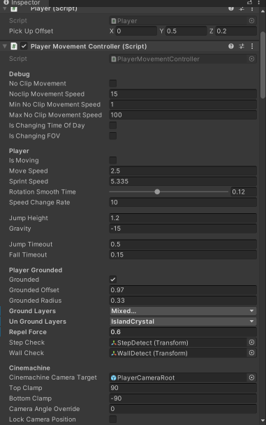

HOW TO
Understand our systems
Follow our guides, we have instructions on how each of the game's core system works from a technical perspective. HERE this one shows you how to set up Unity, which versions are used for the Prototype and the Full Game, and HERE for learning about GitHub, our choice for source control. If anything is not clear in the documentation or guides don't be afraid to ask questions or suggest changes.
Structure your code
Style guides are used so programming teams can have common standards and naming conventions for their code. This helps code readability as in large projects you will be working with other peoples' code. While it may be hard to start using different rules to what you're used to in the long run it helps the project be more accesible to newer members. See our Style Guide HERE
Document your code
XML tags
-
For classes and methods/functions inside that class, include a
<summary>XML tag for their explanation. -
If the method/function has any parameters, use the
<param>XML tag following the<summary>XML tag for the parameter explanation/s. -
REMEMBER that documented code uses three backslashes "///" as opposed to a comment that uses two, "//".
-
We will mostly focus on
<summary>and<param>XML tags but, HERE is documentation for all the available XML tags and descriptions of how to use them.
SerializeField
The SerializeField attribute allows the class member to be exposed in the Unity Inspector even if it is private. Having it exposed for the Unity Inspector allows us to manually change or assign that variable through the inspector instead of code. We can pass in references to game objects in the scene this way.
- It is similar to having a public declaration, but having serializable code allows us to keep the private declarations and have Inspector exposure.
[SerializeField] private float MoveSpeed = 2.5f;

Tooltip
- Unity has an attribute called "Tooltip" that provides context for class members in the Unity inspector and in IDE's such as Visual Studio.
- Including tooltips with every class member increases productivity by not having to switch back and forth between Unity and your IDE to know what a class member is being used for. If the class member has a SerializeField attribute, just hover the mouse cursor on the class member in the inspector and the tooltip will be displayed. The same goes for the class member, any where the member is being called the tooltip will be displayed if the mouse cursor is hovering over it.
using UnityEngine;
/// <summary>
/// Class explanation here
/// </summary>
public class AGoodClassName
{
// Do this
[SerializeField, Tooltip("Health value between 0 and 100.")]
private int _health;
[Tooltip("Stamina value between 0 and 100.")]
public float stamina;
// Don't do this
[SerializeField, Tooltip("Health value between 0 and 100.")] private int _health;
[Tooltip("Stamina value between 0 and 100.")] public float stamina;
/// <summary>
/// Method/function explanation here
/// </summary>
/// <param name="param1">Param 1 explanation.</param>
/// <param name="param2">Param 2 explanation.</param>
public void AGoodMethodName(int param1, float param2)
{
//Do Stuff
}
}
The explanation should follow these rules:
- Use it to explain WHAT the code does, what purpose the code fulfills.
- Make the explanation short, no more than 5 lines.
- Saying that the Jelly_sleep.cs "Handles the Jelly's sleep" is not an explanation.
- A good explanation should contain where this script should be attached or when it's functions are called.
Bug
We document and track all our bugs on our Action Trello. If that does not sound familiar please ask about being added to it in programming chat in the Discord. Learn more about bugs and our procedures HERE